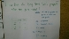

Class: Statistics
Teacher: Mr. Pohlman
Project Name: Final Project
Course Description: Students will work with probability, data collection,
descriptive and inferential statistics, probability, and technological tools to analyze
statistics. The main foci of the course will be exploring data, planning a study, producing
models using probability theory, and making statistical inferences. Students will work with
statistical measures of centrality and spread, methods of data collection, methods of determining
probability, binomial and normal distributions, hypothesis testing, and confidence intervals.
Students will use multiple representations to present data including written descriptions,
numerical statistics, formulas, and graphs.
The following poster was I made for statistics class. It is a final project. We use what we learn
in this whole year and choice one topic.
